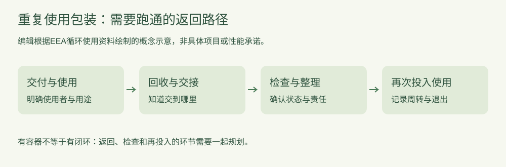

行业动态
研究解读：重复使用包装，需要的不只是一个耐用容器
2026-10-12 · 印个泡泡
从返回、整理和再次使用的路径，理解重复使用包装的系统条件。
把一次性包装换成一个看起来更耐用的容器，不等于建立了重复使用体系。欧洲环境署2023年简报讨论了循环塑料的实践，其中包括食品领域的周转箱与托盘，以及通过返回机制构成闭环的方式。

原创概念示意，由本站编辑结合公开资料整理。不是特定运营项目流程，也不是清洁、食品安全或性能认证说明。
交付出去之后，怎样回来？
这是编辑分析：可以先说明回收地点、交接责任与返回路线。如果使用者不知道交到哪里，或返回后没有下一步安排，再耐用的容器也可能无法形成实际周转。
返回后，谁判断能否再用？
状态检查、适用的整理要求和退出条件应由具体项目确认。涉及卫生或食品接触的场景，需要按相关要求另行制定方案；本文流程图不能用作操作规程。
怎么知道方案有没有跑通？
可记录交付量、返回情况、再投入情况及退出原因，但要明确各指标的口径。没有实际记录时，不应宣称节省了多少材料或减排了多少。运输距离、处理过程和使用次数等条件也应纳入具体评估。
资料年份2023；本站发布2026-10-12。这是对已有研究的解读，并不是近期新出台的政策或某个真实商业案例。
来源：欧洲环境署：Pathways towards circular plastics in Europe，简报02/2023；访问2026-10-12。本文聚焦重复使用体系，与材料回收讨论分开。
为你的产品，找到适合的包装。
选包装，获取报价 →